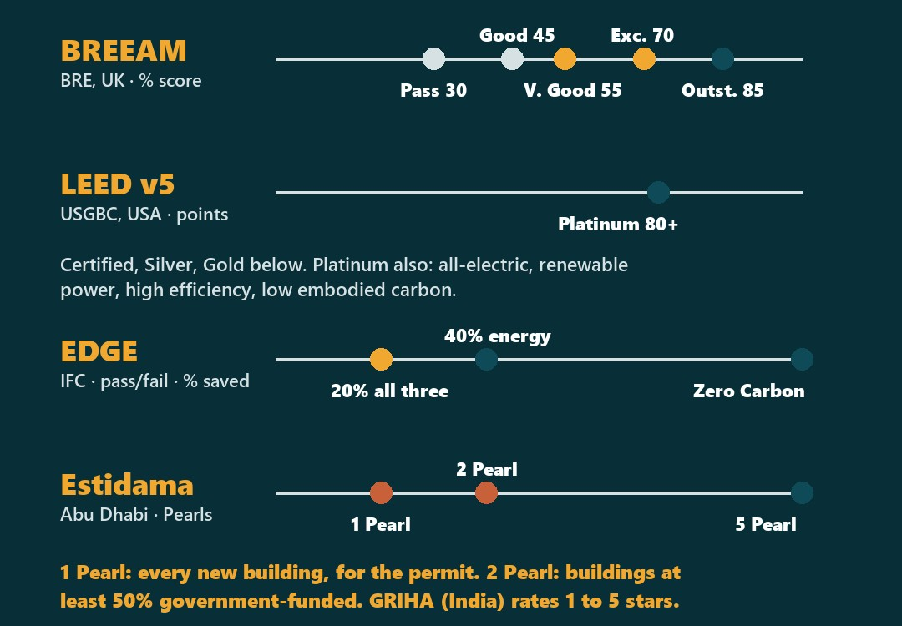
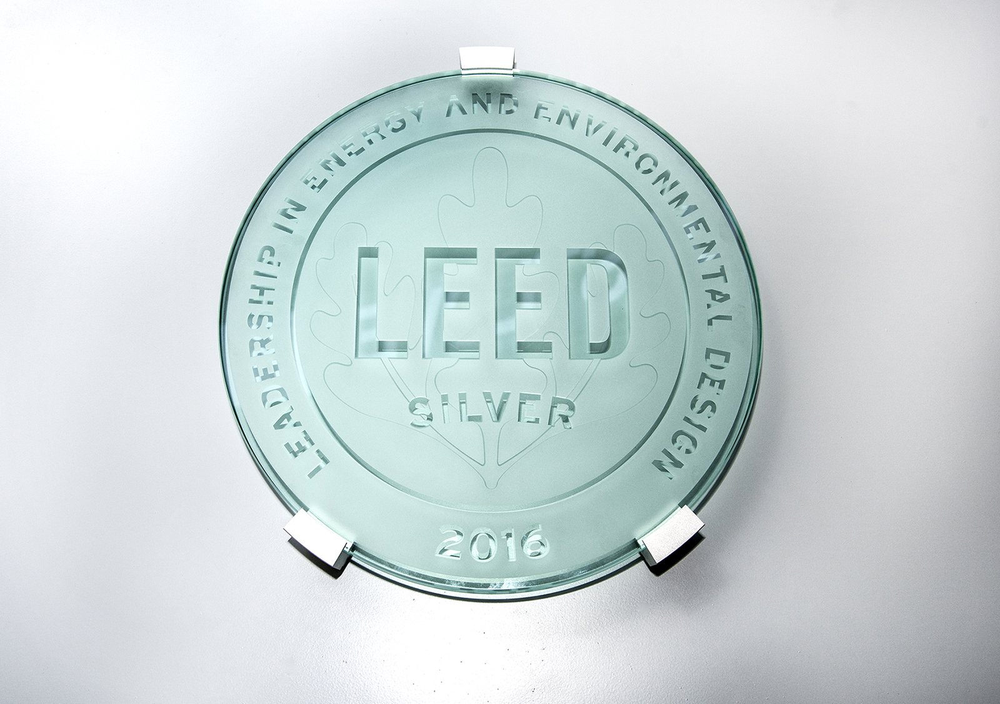
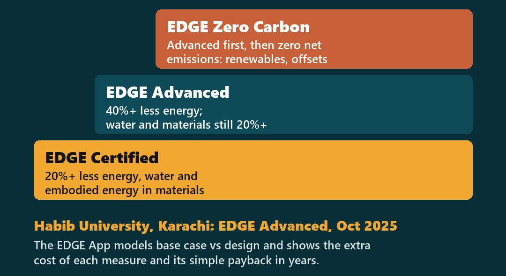
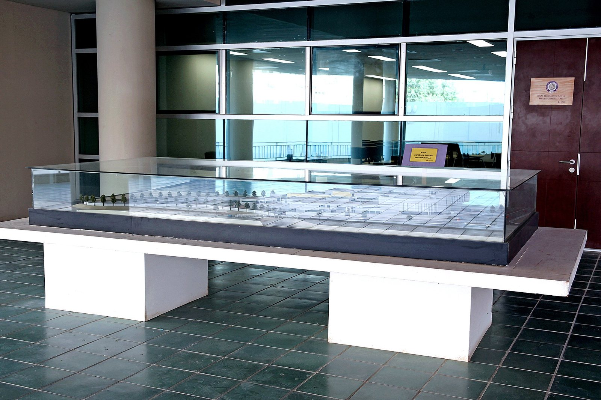
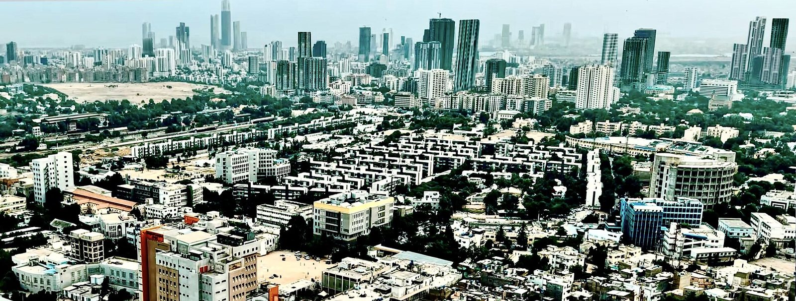

In Abu Dhabi, no Pearl, no permit
Green ratings explained: LEED, BREEAM, EDGE, Estidama and GRIHA, and where Pakistan stands
What does a building take and give off over its life?
It draws on three resources
Energy
Cooling, lighting, equipment: operational energy.
Water
Fixtures, cooling towers, landscape.
Materials
Cement, steel, glass: embodied carbon.
and it shapes three outcomes
Emissions
Power, materials, refrigerants, transport.
People
Air, daylight, comfort, health.
Operation
Commissioning, upkeep, waste.
A green rating is a scorecard across these categories, measured against a baseline building.
From five schemes to one campus in Karachi
LEED (USA), BREEAM (UK), EDGE (IFC, World Bank Group).
Estidama in Abu Dhabi, UAE; GRIHA, India's national rating.
PEC's Green Building Code-2023; NEECA's ECBC-2023 for energy.
Habib University, Karachi: EDGE Advanced, 2025.
Five ratings, one page
Points, percentages, pass/fail, Pearls

Same aim, different arithmetic. In Abu Dhabi, Estidama is part of the building permit.

Half of LEED v5 is carbon
Carbon assessment is now mandatory. Shown: a LEED Silver 2016 plaque, Fulton Center, New York, USA.
kWh/m²/year: Indira Paryavaran Bhawan, 67.3% below the GRIHA benchmark
Ministry of Environment and Forests offices, CPWD, 2013, GRIHA 5 Stars (provisional): 930 kWp solar over both blocks and the courtyard, AAC and rockwool walls, double glazing, chilled beams; low-flow fixtures cut water use 64%.
The free tool that prices each measure

IFC calls Habib the first institution in South Asia and the Middle East, Central Asia and Turkey region with EDGE Advanced: external shading and a lower window-to-wall ratio.

Habib University: a regional first
Shown: the campus model on display inside the Habib University building, Karachi.
20-year benefits vs the extra cost, in 33 green buildings
Kats (2003): premium just under 2% (USD 3–5/ft²); 20-year net value USD 48.87–67.31/ft²; energy alone USD 5.79/ft². Productivity and health are the largest and least certain part.
What Pakistan already has
Building Code of Pakistan 2021
Developed by PEC with the ICC, based on the 2021 IBC.
Green Building Code-2023
Released by PEC on 24 May 2023, based on the 2021 IgCC.
Energy code
NEECA launched ECBC-2023 in 2024. In 2023 PEC, NEECA and the ICC agreed to update the energy code on the 2021 IECC.
Certified buildings
Habib University, Karachi: EDGE Advanced, October 2025.
Pakistan has the codes; Abu Dhabi ties the rating to the permit
PAKISTAN TODAY
- Green Building Code-2023 and ECBC-2023 published
- Practitioners tell us certification is client-led: exporters, multinationals, banks
- A regional first: Habib University, EDGE Advanced
ABU DHABI · INDIA
- Abu Dhabi: 1 Pearl for every new building's permit
- Government-funded (50%+): 2 Pearl minimum
- India's GRIHA HQ measured at 24.13 kWh/m²/yr

Points are won at concept stage
Orientation, shading, glazing first. Shown: brise-soleil louvres on a new building.
Six steps, one free tool
Run EDGE at concept
Base case vs design, cost, payback.
Orient and shade
N–S long faces; shade E, W, S glass.
Cut water
Low-flow fixtures; reuse greywater.
Lower-carbon materials
Blended cement, AAC; log quantities.
Assessor early
EDGE Expert or LEED AP, pre-freeze.
Meter and keep the file
Certificate, report, a year of data.
Rating into the permit, public buildings first
Public buildings first
A minimum, like Abu Dhabi's 2 Pearl.
One report, two checks
EDGE/LEED report as ECBC-2023 proof.
Teach the free tool
EDGE in final-year studio; CPD.
Measure, then publish
Metered kWh/m²/yr after one year.
Limits
Fees; models not meters; code is the floor.

Which requirement would you write first?
Karachi skyline, 2025: the city of Pakistan's regional EDGE Advanced first.
One rule for Pakistan's public buildings: what would it say?
An EDGE result, a Green Building Code-2023 clause, or metered energy after a year? Tell us. Next: Ep 07, energy codes (ASHRAE 90.1, IECC, ECBC).
Answer in the comments of the post that brought you here, or share it with a colleague:
Rana Mohsin Ali · Archiverse-Pakistan · 11 November 2026
Sources: USGBC, LEED v5 page; Kats, The Costs and Financial Benefits of Green Buildings, report to California's Sustainable Building Task Force (Oct 2003); IFC, EDGE Part 1 Building Certification Guidance (Rev 1); International Code Council news release, 26 May 2023; Dawn, 25 Jul 2024; GIZ factsheet, Jul 2025; Habib University news, 20 Oct 2025; EDGE Buildings, Habib University case (29 Oct 2025); AIA Architect, What's new in LEED version 5 (19 Sep 2025); BRE, BREEAM UK New Construction 2014, Table 3; EDGE Buildings, About EDGE; BCLP, How the UAE is legislating to decarbonise buildings (Dec 2023); Abu Dhabi DMT, Pearl Rating System for Estidama; TERI and MNRE, GRIHA Manual Vol. 1 (2011); Salas O'Brien, LEED v5; GRIHA Council, Indira Paryavaran Bhawan case study
Photos: Abu Dhabi skyline from Corniche Road, UAE: FritzDaCat, CC BY-SA 3.0, via Wikimedia Commons; Fulton Center LEED certification plaque, New York, USA: Metropolitan Transportation Authority of the State of New York, CC BY 2.0, via Wikimedia Commons; Habib University, Karachi, campus model: Samarhashmi, CC BY-SA 4.0, via Wikimedia Commons; Brise-soleil louvres on a new building: Dewitt1994, CC BY-SA 4.0, via Wikimedia Commons; Karachi skyline, 2025: Ktownboy103, CC0, via Wikimedia Commons